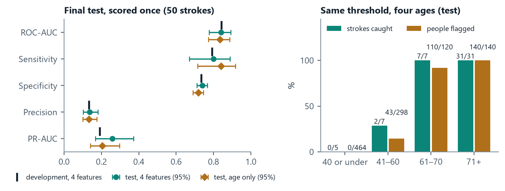
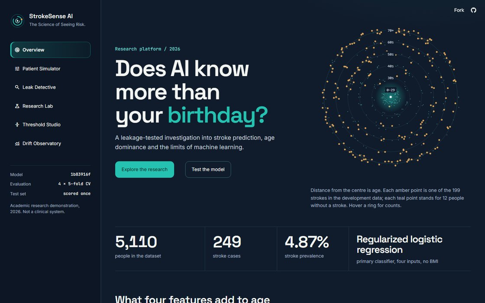
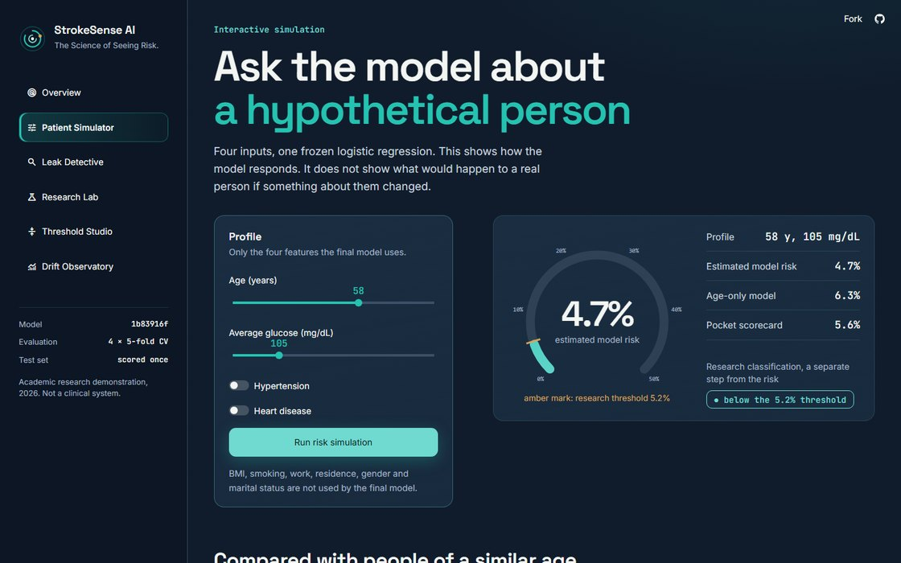
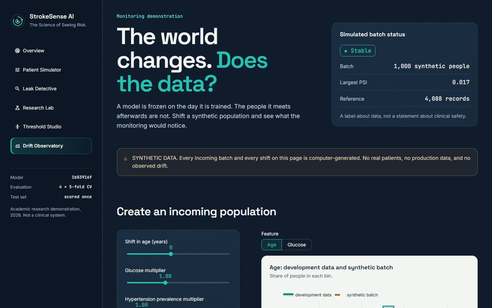

StrokeSense AI, a leakage-tested study of stroke prediction. Academic project, instructor Hanna Abi Akl, November 2026. Author: Maryem Brik.
App: strokesense-ai.streamlit.app Code: github.com/maryembrik/StrokeSense-AI
5,110 people, 249 strokes (4.87%), no duplicates. BMI is blank for 201 people, smoking is "Unknown" for 1,544, and 856 are under 18. All rows were kept. Predicting "no stroke" for everyone gives 95.1% accuracy, so accuracy is useless here and PR-AUC is primary. The data were split 80/20, stratified, seed 42: 4,088 development rows (199 strokes) and 1,022 test rows (50).
Age confounds other variables. "Ever married" has an odds ratio of 4.14, but 0.67 after adjusting for age: it mainly marks older people.
Filling every blank with one median lets a tree isolate the blanks. Filling them at random, or removing BMI, erases boosting's lead. A direct check agrees: adding only a "BMI is blank" flag to logistic regression raises PR-AUC from 0.186 to 0.225.

We excluded BMI because we do not know why it is blank, or whether that would hold for new people. This does not prove target leakage. The cost: for people with no BMI the model expects 8.5% strokes while 21.8% occurred.
Final features: age, average glucose, hypertension, heart disease. Stability selection repeated inside 20 outer folds chose them 20, 13, 12 and 3 times; gender, smoking, work, residence and marriage were never chosen. Heart disease stays for clinical plausibility, not stability. Selection inside the folds gives PR-AUC 0.174, against 0.190 for the four features fixed after exploration, so 0.190 is probably optimistic. All nine BMI-free variables give 0.186.
Ten models, 4 × 5-fold stratified cross-validation. Scaling and encoding are fitted inside folds. Seven models are tuned by random search in an inner 5-fold loop over deliberately regularised spaces (for example trees of depth 1–3, strong L2), which also chooses 4 or 9 features. Three are fixed: the selected model (L2, C = 0.1), Logistic 9 and age only (a spline). Every threshold is the highest that reaches 80% sensitivity on inner predictions. No resampling: logistic with SMOTE raised the mean predicted risk to 31.4% against a true 4.9%.
| Model | PR-AUC | ROC-AUC | Sens. | Spec. | Prec. | F1 | Train − unseen PR |
|---|---|---|---|---|---|---|---|
| Logistic 4, selected | 0.190 | 0.842 | 79.3% | 73.3% | 13.2% | 0.226 | -0.008 |
| Logistic | 0.187 | 0.839 | 80.8% | 72.8% | 13.2% | 0.227 | +0.000 |
| Logistic 9 | 0.186 | 0.839 | 79.9% | 73.1% | 13.2% | 0.227 | +0.006 |
| CatBoost | 0.186 | 0.840 | 79.1% | 73.7% | 13.3% | 0.228 | +0.016 |
| EBM monotone | 0.185 | 0.838 | 79.8% | 72.4% | 12.9% | 0.222 | +0.007 |
| HGB monotone | 0.180 | 0.838 | 81.0% | 72.7% | 13.2% | 0.227 | +0.027 |
| XGBoost | 0.178 | 0.833 | 80.3% | 72.0% | 12.8% | 0.220 | +0.038 |
| Balanced RF | 0.176 | 0.837 | 81.9% | 70.9% | 12.6% | 0.218 | +0.032 |
| Random Forest | 0.174 | 0.834 | 81.0% | 71.2% | 12.6% | 0.218 | +0.049 |
| Age only | 0.172 | 0.836 | 80.5% | 71.5% | 12.6% | 0.218 | -0.005 |

Logistic regression was chosen for simplicity and calibration (slope 1.09, 95% 0.95–1.24), not superiority. A patient bootstrap of fixed predictions is less neutral: it favours the selected model over XGBoost on ROC-AUC, and gives age alone 69 more false alarms (95% 43–99) for 3.8 more strokes caught (−4.8 to 12.5), with no clear net-benefit difference. It ignores retraining variation, so we do not lead with it.
Checks. No overfitting in the selected model (PR gap -0.008; Random Forest +0.049). With shuffled labels ROC-AUC falls to 0.50 over 200 fits. No identical feature rows between development and test. Splines or interactions on the four features add nothing (PR-AUC 0.187–0.191).
The model and its 5.175% threshold were frozen before the test rows were scored. The development column is a 20-fold mean (pooling folds instead gives a lower PR-AUC, 0.172). Test ranking intervals use 4,000 bootstrap resamples, rates use Wilson intervals.
| Metric | Development, 4 features | Test, 4 features (95%) | Test, age only (95%) |
|---|---|---|---|
| PR-AUC | 0.190 | 0.259 (0.168–0.372) | 0.204 (0.140–0.297) |
| ROC-AUC | 0.842 | 0.840 (0.777–0.893) | 0.834 (0.772–0.887) |
| Brier score | 0.043 | 0.041 (0.031–0.052) | 0.042 (0.032–0.053) |
| Sensitivity | 0.793 | 0.800 (0.670–0.888) | 0.840 (0.715–0.917) |
| Specificity | 0.733 | 0.740 (0.711–0.766) | 0.719 (0.690–0.746) |
| Precision | 0.132 | 0.137 (0.102–0.181) | 0.133 (0.100–0.175) |
| F1 | 0.226 | 0.233 | 0.230 |
| False alarms / missed strokes | 1036.5 / 41.2 (of 4,088) | 253 / 10 (of 1,022) | 273 / 8 |

The model expected 49.8 test strokes and 50 occurred. Test PR-AUC is higher than in development, but the development value is inside its interval: this is compatible with chance. At its own threshold, age alone caught 42 strokes with 273 alarms; our model caught 40 with 253. Where the extra features help: on development data, among people within three years of the same age, the model ranks stroke pairs better than age by 0.061 (95% 0.015–0.104).





Educational simulation only: not a medical diagnosis or a validated risk calculator.